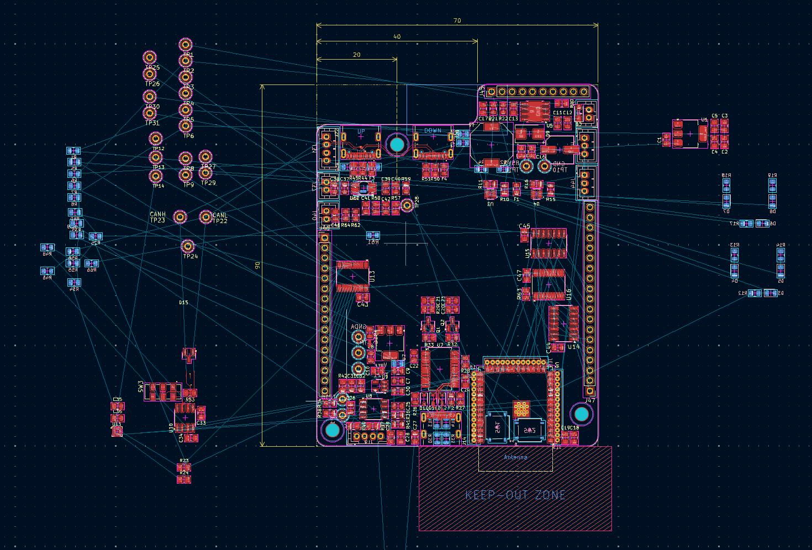
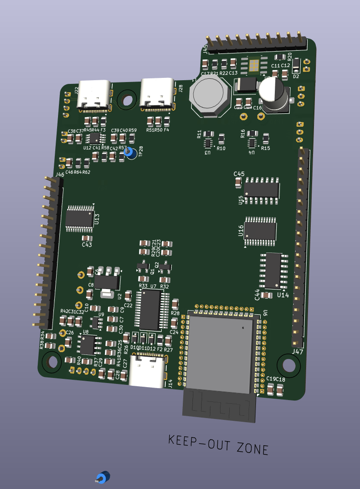

PCB Layout Session 4
I split the KiCad project into two boards according to the architecture selected in the previous entry.
KiCad provides the project-path variable ${KIPRJMOD}. I will update the footprint-library
paths so that the 3D models use this variable instead of absolute paths on my computer.
The I/O PCB will contain the following components:
- The buttons and their RC debounce filters will be placed on the I/O PCB.
- The indicator LEDs and their resistor arrays will be placed on the I/O PCB.
- The 7-segment display will be placed on the I/O PCB.
- The rotary encoder and its RC debounce filter will also be placed on the I/O PCB.
This arrangement makes the main Service PCB more flexible. Its GPIO expanders provide dedicated input pins connected to Schmitt triggers, as well as flexible pins that are currently used as LED outputs. The I/O PCB can later be redesigned to connect different peripherals without changing the Service PCB.
I stopped working for the night at 3:40 a.m.

